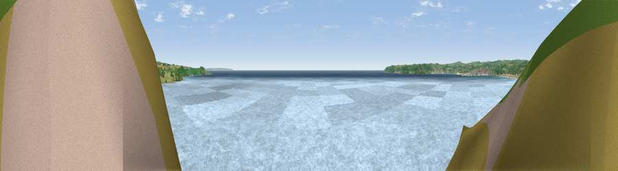

Viewpoint near Marazion
#17326 in England · top 56% of its area beats it · near MarazionWhere it is
The exact computed spot (SW 51425 29825). Click the marker for map links.
The view, rendered

A 360° render of this exact spot computed from the terrain model, tree cover and land cover — summer colours, afternoon light, calibrated against photographs of famous viewpoints. Real trees, hedges and buildings will differ in detail.
The panorama
Grey silhouette: terrain skyline in each direction (720 bearings, Earth curvature and refraction included). Dashed green: skyline with trees (+15 m) and buildings (+8 m) as obstacles. Blue strip: how far the ground is visible on each bearing.
Where the view opens
Wedge length = distance to the farthest visible ground on that bearing (vegetation-aware). Rings at 10, 25 and 50 km.
What fills the view
89% water · 5% grassland · 2% woodland · 2% built-up · 1% cropland
Angular shares of the visible panorama (visual magnitude), not map area. Landscape diversity 0.21 (0–1 Shannon).
Key numbers
More beautiful places nearby
The staircase of upgrades: each row has a higher view potential than everything closer. Driving times are estimates from straight-line distance, calibrated against real road routing — check an actual route before setting out.
| Place | Direction | Drive | Score |
|---|---|---|---|
| Rose Hill | NNE · 1 km | ~3 min | 57.4 |
| Viewpoint near Perranuthnoe | ENE · 2 km | ~5 min | 58.3 |
| Viewpoint near Perranuthnoe | ESE · 3 km | ~8 min | 68.5 |
| Viewpoint near Paul | WSW · 5 km | ~12 min | 68.8 |
| Viewpoint near Ludgvan | NNW · 5 km | ~12 min | 75.0 |
| Viewpoint near Gulval | NW · 5 km | ~12 min | 76.6 |
| Viewpoint near Towednack | NNW · 6 km | ~12 min | 79.1 |
| Godolphin Hill | ENE · 8 km | ~16 min | 81.5 |
50.11634, -5.47849 · source: screening · position refined by local search. Computed location — check access rights before visiting.